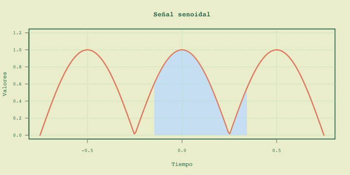

Redes Inalámbricas
Fundamentos de transmisión de datos
Dr. Julio César Ramírez-Pacheco
Presentación en: https://monoxide2000.github.io/wirelessSlides_02
Agenda
- Señales de comunicación
- Transmisión de datos digitales y analógicos
- Conclusiones y preguntas.
Señales
Las señales se dividen en:
Señales analógicas y digitales
Señales periódicas
Definición
Una función, $f(t)$, definida para todo $t \in \mathbb{R}$ se dice que es periódica con período $T$ si:
$$
f(t) = f(t+ T)\; \; \forall t \in \mathbb{R}
$$
La constante mínima $T$ que satisface la ecuación de arriba se llama el período fundamental. De igual forma se cumple que $f(t) = f(t+nT)$ para cualquier entero $n\ne 0$.
Señales periódicas: características

Señales periódicas: características

Señales periódicas: características

Señales periódicas: cont.
- La suma, resta y multiplicación de funciones periódicas con período $T$ es periódica con período $T$.
- Si $f_1(t+T_1)=f_1(t)$ y $f_2(t+T_2)=f_2(t)$ entonces $f_1(t)\pm f_2(t)$ es periódica si $T_1/T_2$ es racional.
- $\int_{\alpha}^{\alpha+T}{f(t) \, dt} = \int_{\beta}^{\beta+ T}{f(t)\, dt}$.
Señales periódicas: $\int_{\beta}^{\beta+ T}{f(t)\, dt}$

Señales periódicas: $\int_{\beta}^{\beta+ T}{f(t)\, dt}$

Señales periódicas: $\int_{\beta}^{\beta+ T}{f(t)\, dt}$
Señal senoidal
Señal senoidal: cont.
Señal senoidal: cont.
Dominio de la frecuencia
- Las señales en el dominio del tiempo $f(t)$ tambien pueden representarse en el dominio de la frecuencia $F(\omega)$ mediante:
- Una serie de Fourier si es periódica y continua.
- Transformada de Fourier si es aperiodica y continua
- DFS, DTFT, DFT y FFT si son discretas.
Dominio de la frecuencia
Dominio de la frecuencia: cont
Codificación analógico / analógico
Se obtienen como: $s(t) = [1+x(t)]\times \cos(2\pi f_c t)$.
Codificación analógico / analógico
Codificación digital / analógico
- De igual forma que el caso anterior, se modifica algún parámetro de: $f(t) = A\sin(2\pi f_c t + \phi)$.
- La señal de información es digital, es decir formada de $0$s y $1$s.
- Usualmente a estas codificaciones se les llaman modulaciones digitales.
- Varios tipos importantes como ASK, FSK, PSK, QAM, QPSK, MFSK.
Modulación ASK
Modulación FSK
Modulación FSK
Modulación PSK
Codificación digital / digital
- En este caso los datos son digitales y las señales de salida son digitales.
- Son utilizados en redes locales de baja y alta velocidad.
- De igual forma, pueden servir como entrada para los moduladores digital y analógicos para transmisión inalámbrica.
- Entre las codificaciones que encontramos están las NRZ-L, NRZI, Manchester, AMI, Pseudoternario, etc.
NRZ-L y NRZI
AMI Bipolar
Pseudoternario
Codificación analógico / digital
- En este caso los datos son analógicos y las señales de salida son digitales.
- Se utiliza mucho en las transmisiones de voz sobre medios digitales.
- Ejemplos de sistemas que utilizan esta codificación son; PCM, PCM diferencial, Modulación Delta, etc.
- En esta sección ilustraremos el teorema del muestreo.